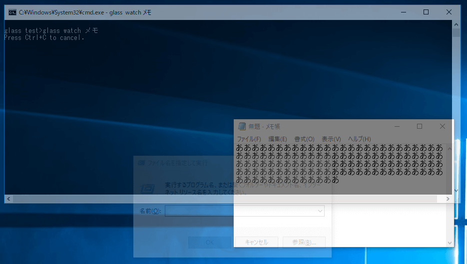
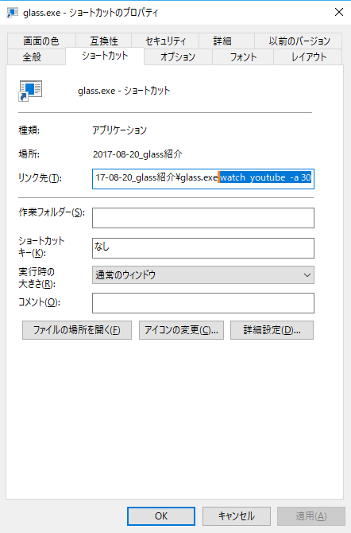

指定ウィンドウ以外を透過するソフト。
紹介
自分以外を透過する
とりあえず、下のスクリーンショットを見てください。
 このスクリーンショットは、「メモ」というタイトルのウィンドウが常に見えるように、他のウィンドウを透過しているところです。
左上に写っているコマンド「glass watch メモ」により、指定したウィンドウを隠すようなウィンドウが自動的に透過されます。
場所を取られずに、作業＆参照をする
他のウィンドウを見ながら作業をしたいという場合、スクリーンの面積が問題になります。
頻繁にウィンドウをどけたり、不要なウィンドウを最小化させたり…そういった面倒なことを省略してくれるのが、このソフトの便利なところです。
（複数のディスプレイがある環境ならば、面積や表示される情報量に苦心する必要もありませんが。個人的には、視線を移動するのが面倒だったり…横着なものです）
使い方
コマンドライン
glass はコマンドラインから起動するソフトです。
常に見えるようにしたいウィンドウは、上のスクリーンショットにあったように、コマンドラインの引数として渡します。
このページでは、基本的かつ普段使いできるような使い方を説明します。
実行中はコマンドプロンプトを終了させないようにしてください。 将来的には普段は非表示になるような作りにしたいと思っていますが、現時点ではこれが制限事項ということでご承知おき下さい。
とりあえず覚えておくこと
- コマンドプロンプトを開き、
- glass.exe があるところに cd し、
- 「glass {サブコマンド] {対象のタイトル(部分的なものでOK)} 」する。
- 何かあったら、Ctrl + C をして中止し、「glass recover」で透過を解除(※)
※「glass recover」は念のための処理です。普段は実行する必要はありません。
- どんなことができるか調べたい場合は、「glass help」もしくは「glass help {サブコマンド}」
基本的な使い方
glass watch {対象のタイトル(部分的なものでOK)}
実際には、以下のようになります。
glass watch youtube
上の例では、タイトルに youtube を含むウィンドウが見えるように、他のウィンドウを透過します。
タイトルの指定
タイトル(上の例ではyoutube)は、大文字小文字を区別しません。(全角半角は区別されます)
また、スペース区切りで複数の条件を指定することもできます。 この場合、いずれかのタイトルを含むウィンドウが対象となります。
glass watch youtube ニコニコ
さらに追加でオプションを指定することで、透過度を変えたり、自動的に行われる透過度の変更頻度を変更したりすることができます。
透過度
glass watch {タイトル} -a {1～100の%値}
値が大きいほど、他のウィンドウを透明化します。 何も指定しなかった場合は、15 が指定されたものとして扱われます。
glass watch youtube -a 30
変更頻度
※パフォーマンスのため、ウィンドウを切り替えたりしなければ、透過度の変更も行いません。
ウィンドウを切り替えた場合、通常では250ミリ秒で透過度を変更します。 この間隔を変更したい場合は、以下のように指定します。
glass watch youtube -i 1s
glass watch youtube -i 100ms
数字の後の「s」は秒を、「ms」はミリ秒を意味します。
発展的な使い方
glass.exe のショートカットを作っておきます。
Warning: 終了する場合は、あくまでも Ctrl+C です。コマンドプロンプトの×で閉じた場合は透過が元に戻りませんので「glass recover」が必要になります。
 glass.exe のショートカットを作成し、その「リンク先」を編集しているところです。glass.exeの後ろに(スペースに続いて)「watch youtube -a 30」を指定しています。 これで、あとは YouTube 動画を全画面にしておけば、動画を見ながらの作業が捗りますね。
ダウンロード
Windows のみの配布です。
更新履歴
| Version | Date | Descrition |
|---|---|---|
| 0.3.0 | 2017/08/27 | 公開～諸々 |